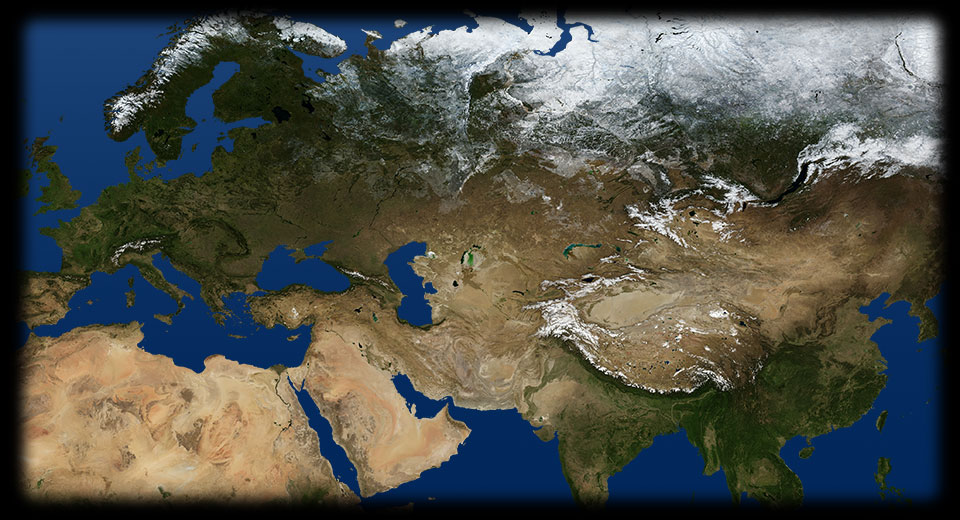
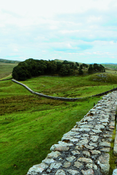
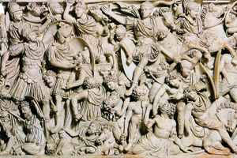

- 180 120
- 250 620
- 250 230
- 160 50
- 200 140
LIMES
Il territorio a est del limes è occupato da foreste. Gran parte dei confini dell’Impero è costituito da grandi fiumi: il Reno e il Danubio.MURAGLIA CINESE
Anche la Grande Muraglia (III secolo a.C.), è stata costruita dall’Impero cinese per difendersi dalle incursioni delle popolazioni nomadi, che provenivano dall’attuale Mongolia.ADRIANOPOLI
378: l’esercito romano viene sconfitto ad Adrianopoli dai visigoti.- 
VALLO DI ADRIANO
Il vallo di Adriano, di cui qui vediamo una parte degli imponenti resti, fu costruito nel secondo secolo. Era allo stesso tempo un’opera di fortificazione contro le popolazioni che abitavano il nord della Gran Bretagna e un simbolo della potenza dell’Impero romano. - 
SARCOFAGO LUDOVISI
Le feroci e convulse battaglie che opponevano i legionari romani ai cosiddetti “barbari” sono ben rappresentate in questo capolavoro della scultura romana del terzo secolo: il Sarcofago Ludovisi ci mostra un generale che guida le sue truppe contro i soldati di una tribù, probabilmente germanica.